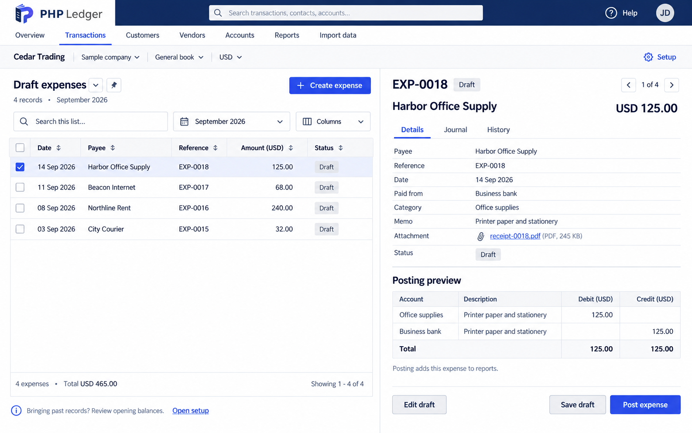
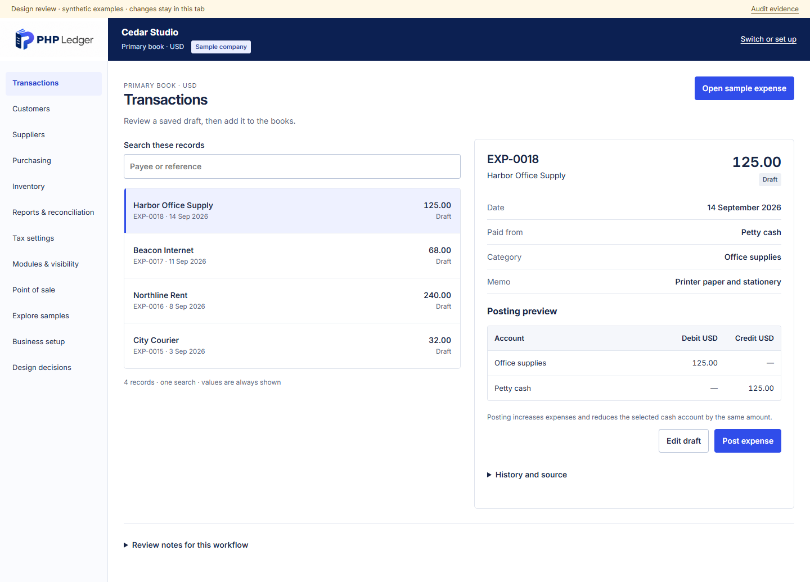

Approved Review Console ? 1586 ? 992 source

Current prototype ? 1440 ? 1035

Design comparison only. The prototype intentionally consolidates navigation and changes mobile behavior; this is not a pixel clone. The selected draft amount and document identity are held constant.

